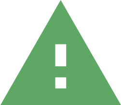

<link rel="import" href="../../bower_components/polymer/polymer.html">

<link rel="import" href="../../bower_components/iron-overlay-behavior/iron-overlay-behavior.html">

<link rel="import" href="./generic/app-localize-behavior.html">

<dom-module id="planet-kiosk-inactivity">
  <template>
    <style include="planet-kiosk-page-styles planet-kiosk-popin-styles">
      :host {      
        background-color: var(--planet-color-theme-mainbg);        
        display: block;
        width: 100%;
        height: 100%;
        margin-top: 90em;
      }
      .message {
        font-size: 4em;
        font-family: var(--planet-font-family-book);
        color: var(--planet-color-theme-message);
        text-align: center;
        margin: 2em 0 2em 0;
      }

      .session {
        font-size: 7em;
        font-family: var(--planet-font-family-heavy);
        color: var(--planet-color-theme-information);
        text-align: center;
        font-weight: bold;
        margin: 0.5em 0 1em 0;
      }
    </style>

    <div on-tap="close">
      
      <p class="session">[[localize('session_expire_title')]]</p>
      <p class="message">[[localize('session_expire_desc')]]</p>
      
    </div>

  </template>

  <script>
    Polymer({
      is: 'planet-kiosk-inactivity',
      behaviors: [
        AppLocalizeBehavior,
        Polymer.IronOverlayBehavior
      ]
    });

  </script>
</dom-module>